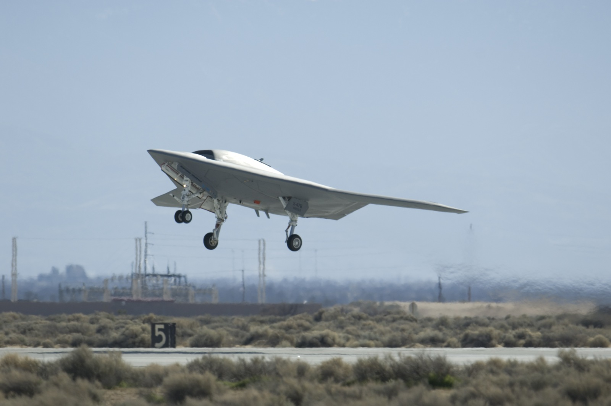
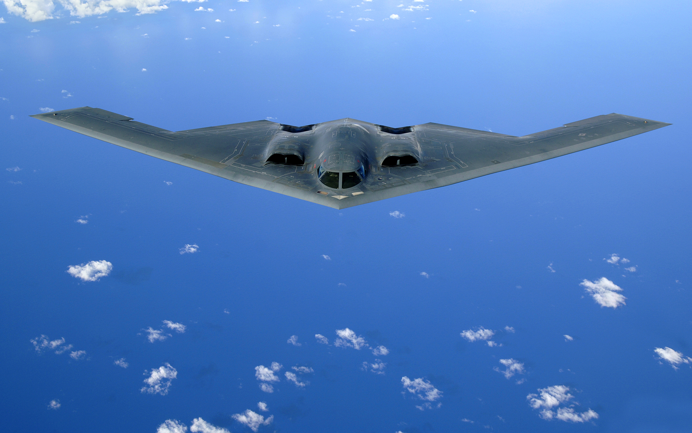
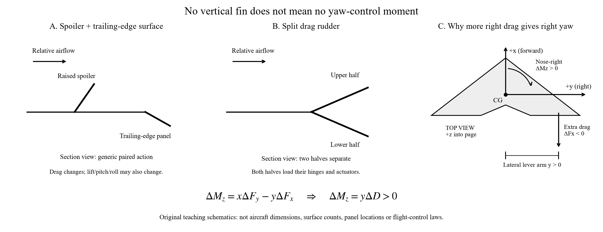

7A-12. X-47B and B-2: how do aircraft without a vertical tail control yaw?
Learning target: identify the physical effector, explain the change in force, obtain the yaw-moment sign, and trace the reaction into the wing. A vertical rudder is one way to generate yaw, not a requirement for yaw control.
7A-12a. X-47B: coordinate spoilers and trailing-edge controls

X-47B unmanned demonstrator. U.S. Air Force / Rob Densmore, 4 February 2011. Photo and public-domain record.
Look first: trace the swept wings and their rear edges. There is no upright fin. This front/underside photograph is useful for the overall layout; upper-wing spoiler deployment and the individual commands are not resolved.
Aircraft-specific evidence: published technical literature describes the X-47 approach as spoilers combined with trailing-edge control surfaces, citing Whittenbury's X-47B design-development paper. This is not simply the B-2's split-rudder arrangement. Open research paper, Introduction; design reference: Whittenbury, AIAA 2011-7041. The public research description establishes the mechanism family, not a complete X-47B command schedule.
Explain the physics step by step:
- Change aerodynamic loading on one side. Deploying a spoiler can increase drag and reduce lift on that wing. Coordinated trailing-edge motion changes the local loading as well.
- Use the drag difference for yaw. A net drag increase on the right acts behind the direction of travel at a right-side lever arm. Its yaw contribution turns the nose right; a greater left-side drag increment gives the opposite sign.
- Manage the coupled motion. The lift change also tends to roll the aircraft and can affect pitch. The other surfaces must be coordinated to obtain the requested combination of yaw, roll and pitch. Do not teach “raise a spoiler and obtain pure yaw.”
Structural bridge: spoiler pressure and trailing-edge panel pressure enter through two sets of hinge fittings and actuator anchors, then ribs, spars and skins. The yaw command therefore changes distributed wing loads, not just an abstract heading variable.
7A-12b. B-2 Spirit: split drag rudders on a crewed flying wing

B-2 Spirit: a crewed aircraft, not a UAV. U.S. Air Force / Staff Sgt. Bennie J. Davis III, 30 May 2006. Original photo / public-domain record; image content unchanged.
Locate: start at each wingtip and follow the outer trailing edge inward. This is the region of the split drag-rudder assemblies; the elevons occupy more inboard trailing-edge regions. The photograph locates the airframe geometry, but does not show a clearly opened clamshell or establish a yaw command. Use sketch B below to understand the opening motion.
Documented hardware: Northrop Grumman engineers identify upper/lower split drag rudders for yaw, elevons for pitch/roll, and a centerline gust-load-alleviation surface. Their flight-control architecture drawing labels the outboard split rudders. Dreim, Jacobson and Britt, “Simulation of Non-Linear Transonic Aeroelastic Behavior on the B-2,” 1999, printed p. 515, Fig. 7 (PDF p. 83).
- Open the two halves: upper and lower portions separate like a clamshell, increasing local drag.
- Make drag unequal: more right-side drag produces a nose-right yaw contribution; more left-side drag produces nose-left yaw. “More” can mean unequal openings, not necessarily one fully closed side.
- Distinguish yaw from braking: equal drag increments on both sides cancel their yaw contributions in an ideal symmetric model while adding braking drag. Actual lift/roll/pitch coupling need not vanish.
Structural bridge: both halves have pressure loads, hinge reactions and actuator reactions. Follow both load branches into the outer wing and wing box. The flight-control computer coordinates the hardware; it does not itself supply the aerodynamic force.
7A-12c. One moment balance explains both approaches

Read A and B as local mechanism sketches, then C as the whole-aircraft moment balance. These are teaching schematics, not measured reconstructions of either aircraft.
Reuse the body axes from 7A-3b: x forward, y right, z down, moments about the CG. For an isolated rearward force increment, ΔFx = −ΔD, ΔFy = 0. Thus:
ΔMz = xΔFy − yΔFx = yΔD.
Two-minute calculation — invented classroom loads, not aircraft measurements: place the right/left drag increments at y = ±4 m. Let ΔDR = 30 N and ΔDL = 10 N. Then ΔMz = 4(30 − 10) = +80 N·m: nose-right tendency. Total added drag is 40 N. With 20 N on each side, the same 40 N braking increment gives zero net yaw increment in this simplified model.
Link back to Lilienthal (7A-3b): an aft vertical rudder can generate yaw through xFy; an outboard drag device can generate yaw through −yFx. A tip vane can alter several force components. Name the force and lever arm before naming the control role.
Instructor check: ask students to sketch the two drag arrows, mark the CG, predict the yaw sign, and draw both hinge and actuator load paths. Then ask: “What extra aerodynamic information would you need to predict roll?” Answer: the accompanying vertical-force changes and their lever arms, not only the drag difference. Yaw moment alone also does not specify the aircraft's complete turn trajectory.